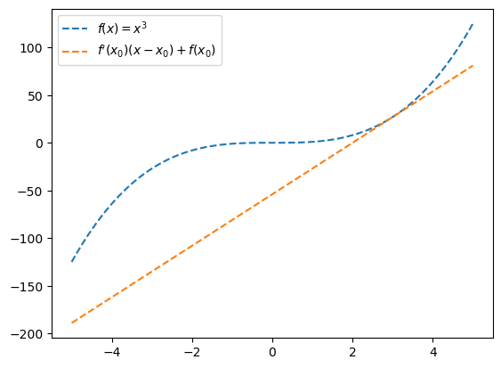
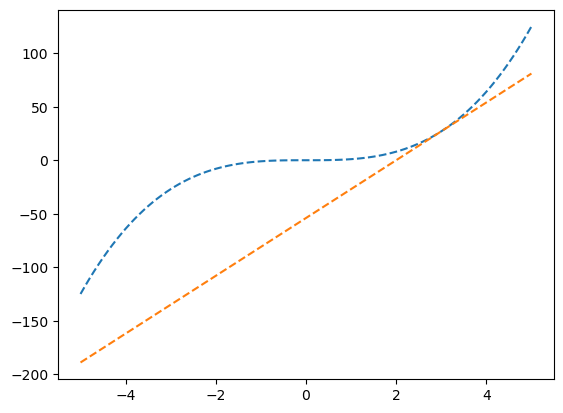
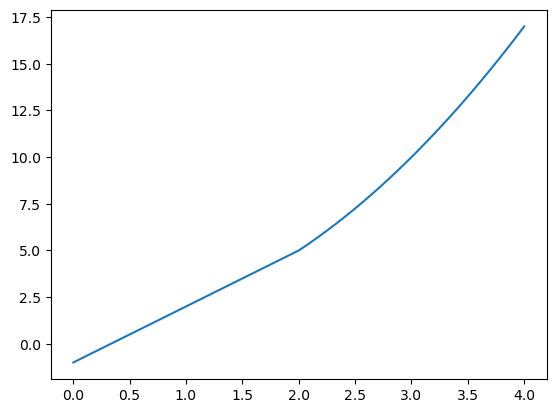
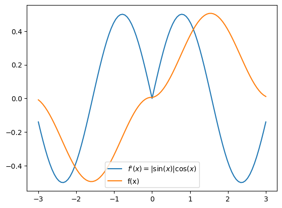
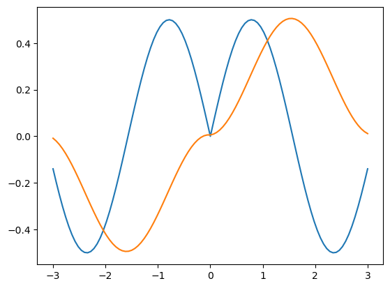

import numpy as np
import matplotlib.pyplot as plt03wk-1: 퀴즈2

Caution
- 전북대 학생들을 시험당일 학생증을 지참할 것. (출석체크 및 본인확인) 학생증 외에 신분증 여권등도 가능.
- 부정행위 (카카오톡 채팅을 통한 코드공유, 생성형모델 사용, 대리시험 등) 적발시 F 처리함.
- 퀴즈 중 지각할 경우 지각사실을 기록함. 하지만 별다른 감점은 하지 않음.
.ipynb파일 형태로 제출된 답안지만 채점하며 그 외의 형식 (.hwp,.py등)은 채점하지 않음. 즉 0점 처리함.
문제 1. – 10점
\(f(x)=x^3\) 위의 임의의 점을 입력하면 접선을 리턴하는 함수를 구현하라. 이러한 함수를 이용하여 아래와 같은 그래프를 그려라. (범례는 표현하지 않아도 감점없음)
#
- \(x\)의 범위는 \((-5,5)\) 이다.
- 두 그래프는 \(x=3\) 에서 접한다.
(풀이)
def make_func(x0):
f = lambda x: x**3
def func(x):
h = 0.0001
a = (f(x0+h)-f(x0))/h
return a*(x-x0) + f(x0)
return func
x = np.linspace(-5,5,101)
tan_line = make_func(3)
plt.plot(x,x**3,'--')
plt.plot(x,tan_line(x),'--')
문제 2. – 10점1
함수 \(f(x)=(x+1)(x^2+3)\)에 대하여 \(f'(1)\)의 값을 구하라.
(풀이)
f = lambda x: (x+1)*(x**2+3)
h = 0.000001
(f(1+h)-f(1))/h8.0000040014738261 2024년 수능 17번
2 2024년 수능 4번 응용
문제 3. – 10점2
\(0 \leq x \leq 4\)의 범위에서 함수
\[f(x) =\begin{cases} 3x-1 \quad (x<2) \\ x^2+1 \quad (x\geq 2) \end{cases}\]
의 그래프를 그려라.
(풀이)
f = lambda x: 3*x-1 if x<2 else x**2+1
x = np.linspace(0,4,101)
plt.plot(x,list(map(f,x)))
문제 4. – 10점3
\(\frac{3}{2}\pi < \theta < 2\pi\) 인 \(\theta\) 에 대하여 \(\cos\theta = \frac{\sqrt{6}}{3}\) 일 때 \(\tan(\theta)\)의 값을 구하라.
(풀이)
theta = np.linspace(3/2*np.pi,2*np.pi,100)
np.argmin(np.abs(np.cos(theta) - np.sqrt(6)/3))60np.tan(theta[60])-0.71209677637936763 2024년 9평 3번
4 2024년 9평 25번
문제 5. – 10점4
함수 \(f(x)=x+\ln x\)에 대하여 \(\int_1^{e} (1+\frac{1}{x})f(x)dx\)의 값은?
(풀이)
f = lambda x: x+np.log(x)
x = np.linspace(1,np.exp(1),100)
np.mean((1+1/x)*f(x)) * (np.exp(1)-1)6.409521328970472문제 6. – 20점
(2)번만 맞추어도 정답으로 인정
(1) \(f'(x)=x\) 일 경우 \(f(x)\)의 그래프 개형을 그려라.
(2) \(f'(x)=|\sin(x)|\cos(x)\) 일때 \(f(x)\)의 그래프 개형을 그려라.5
5 2024년 수능 30번 변형
- \(-3<x<3\) 에서의 개형을 그릴것
# 시각화예시
(풀이)
x = np.linspace(-3,3,101)
ff = np.abs(np.sin(x))*np.cos(x)
f = np.cumsum(ff) * 0.06 plt.plot(x,ff)
plt.plot(x,f)
문제 7. – 30점
첫째항이 1이고 공차가 \(0<d<1\) 인 등차수열에서, \(\sum_{n=1}^{75}a_n=1046.25\) 를 만족하는 \(d\)를 찾아라.
힌트1: 첫째항이 1이고 공차가 \(d>0\)인 등차수열의 일반항은 \(a_n = 1 +(n-1)d\)와 같이 표현할 수 있다.
힌트2: \(d\)는 아래중 하나의 값을 가진다.
np.linspace(0,1,101)[1:-1]array([0.01, 0.02, 0.03, 0.04, 0.05, 0.06, 0.07, 0.08, 0.09, 0.1 , 0.11,
0.12, 0.13, 0.14, 0.15, 0.16, 0.17, 0.18, 0.19, 0.2 , 0.21, 0.22,
0.23, 0.24, 0.25, 0.26, 0.27, 0.28, 0.29, 0.3 , 0.31, 0.32, 0.33,
0.34, 0.35, 0.36, 0.37, 0.38, 0.39, 0.4 , 0.41, 0.42, 0.43, 0.44,
0.45, 0.46, 0.47, 0.48, 0.49, 0.5 , 0.51, 0.52, 0.53, 0.54, 0.55,
0.56, 0.57, 0.58, 0.59, 0.6 , 0.61, 0.62, 0.63, 0.64, 0.65, 0.66,
0.67, 0.68, 0.69, 0.7 , 0.71, 0.72, 0.73, 0.74, 0.75, 0.76, 0.77,
0.78, 0.79, 0.8 , 0.81, 0.82, 0.83, 0.84, 0.85, 0.86, 0.87, 0.88,
0.89, 0.9 , 0.91, 0.92, 0.93, 0.94, 0.95, 0.96, 0.97, 0.98, 0.99])(풀이)
def func(d):
n = np.arange(1,76)
an = 1+(n-1)*d
return np.abs(np.sum(an)-1046.25)d_arr = np.linspace(0,1,101)[1:-1]
d_arr[np.argmin(list(map(func,d_arr)))]0.35000000000000003
Note
정답을 구하지 못하여도 논리전개가 올바르면 만점처리함. 노가다로 답을 구한 경우 정답으로 인정하지 않음.